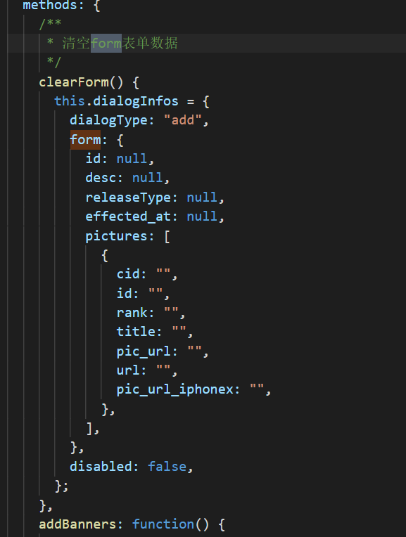
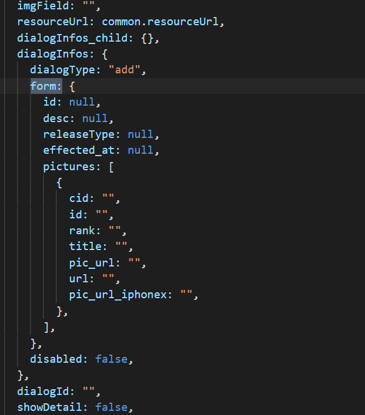
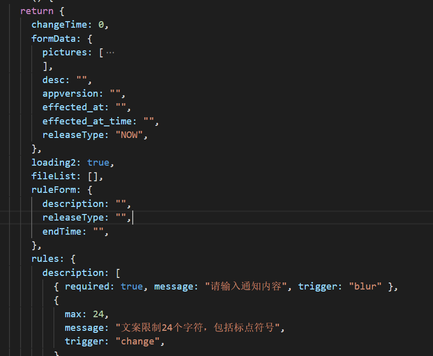
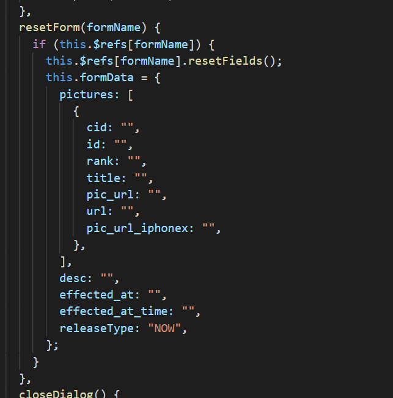
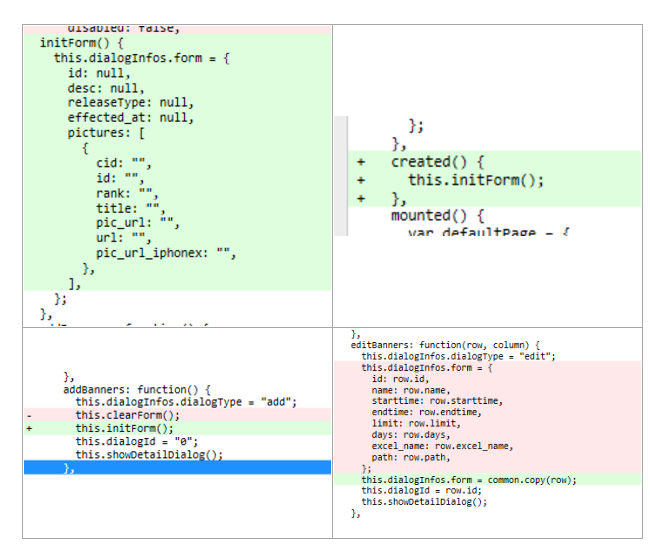
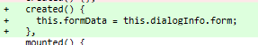
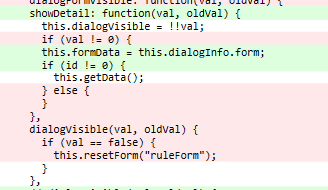

|  |  |  |  |
相同的基础数据被使用了四次,这个是没用必要的,并且清空表单有时显得多余,是无效操作,并且相同的数据分散四处,后期修改数据会使维护变得繁琐易错;数据关系也产生了耦合
深入理解vue的数据绑定与子父组件通信,理解js的对象,赋值只需要写一次,也不需要清空重置表单数据,并且可以做到更加可靠
核心思想是:父组件负责对数据的控制/子组件负责数据的显示传导;各司其职,做到解耦,组件解耦了,如果每层接口设计的好,组件的改动对其他组件完全是透明的,易分工,不易错
对父组件进行处理,去除重置与初始化代码;加入初始化函数(仅在这里加入基础数据);在组件创建前初始化,在新建表单前初始化,在编辑表单时直接调用行数据,完全没必要重置数据
对于子组件仅需组件创建时/表单开启时引入父组件prop数据即可,不需要重置数据
|  |  |  |
实测功能无变化,并且数据控制更简单可靠(详见 git提交: fix:简化示例)